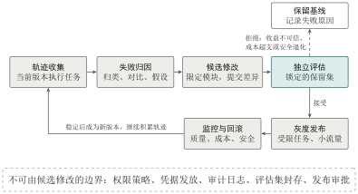

7.8 RSI：从任务内纠错到系统自我改进
第 7.7 节的循环解决的是当前任务：测试失败后，根据证据改代码、再验证。可同类失败会在下一个仓库、下一次会话里重演。本节回答：能否让系统从多次任务的轨迹中提出对自身的改进，并证明改进是真的、能迁移？这类过程称为递归自我改进（RSI）。本节依次讨论改什么（先限定修改面）、怎样从轨迹提出候选、怎样用保留集证明收益、怎样发布和回滚。结论是：自我改进也要走软件交付流程，只有在保留任务上收益可信、成本可控、安全不退化，才算改进。
7.8.1 改进的对象：先限定修改面
RSI（Recursive Self-Improvement，递归自我改进）在本章指：Agent 系统根据过往任务的执行轨迹，提出对自身的改动，经独立评估后决定是否进入下一版本。记系统的第 \(i\) 个版本为 \(H_i\)，这里的 \(H\) 主要指模型周围的 Harness（广义，见第 7.1.3 小节）——提示模板、工具组织、上下文管理、记忆读写和循环控制。“递归”是说改进后的系统会参与下一轮改进：版本 \(H_0\) 根据轨迹提出候选 \(H_1\)，\(H_1\) 通过门禁后执行新任务、积累新轨迹，再提出 \(H_2\)；模型权重可以保持不变。候选被提出，不等于改进已经成立，更不意味着系统可以自行扩大权限。
把“提升 Agent”当作一句笼统的目标，容易同时改提示、工具、记忆和测试，最后不知道是哪项改动起了作用。工程上应把可改进的部分分成模块，每个模块单独保存版本、限定修改边界（表 7-16）。
表 7-16 RSI 可修改的模块与需要防止的退化
| 模块 | 可提交的改动 | 需要防止的退化 |
|---|---|---|
| Prompt | 任务模板、规划规则、输出格式 | 过长、互相矛盾，或针对评测题写特例 |
| Context | 检索策略、压缩规则、来源标签 | 丢失关键证据，或把不可信内容提升为指令 |
| 工具 | 工具说明、参数校验、调用路由 | 权限扩大、调用成本增加、错误结果被信任 |
| 记忆与技能 | 经验条目、适用条件、失效时间 | 错误经验长期保留，跨项目污染 |
| Loop | 重试策略、验证顺序、完成判定 | 提前结束、无效循环、跳过安全门禁 |
例如，多个任务都在带时区的时间戳上出错，合理的候选是给时间处理类任务加一条规则或一个检查器：“识别时间戳中的时区信息，并验证转换边界”。把“本次相差八小时”写进提示模板，只是记住了样本。可迁移的改进描述的是失败机制和适用条件，而不是某道题的答案。
7.8.2 从轨迹提出候选：观察、归因、假设
改进首先需要结构化的轨迹，而不只是“成功 / 失败”标签。一条轨迹至少记录：任务与仓库版本、所用的 Harness 版本、工具调用、观察结果、测试证据、人工介入、成本和失败类别。轨迹里如果有代码、邮件或用户资料，收集和复用都要遵守数据权限，评估集要脱敏并控制访问。
候选可以分三步提出：
归类重复失败：哪些错误在不同任务里反复出现，哪些只是环境的偶发故障？
对比成功与失败的轨迹：成功的轨迹多做了哪项检查？失败的轨迹在哪里过早下了结论？
写出可证伪的假设：例如“在调用时间转换工具前校验输入的时区字段，会降低跨时区提醒任务的失败率，且不明显增加一般任务的成本”。
假设指向清楚的机制，后面的评估结果才能被解释。候选应以可审查的差异提交：改了哪些文件、作用范围、预期收益、可能风险、适用与不适用的条件。系统还应限制每轮修改的预算和模块数：一次候选同时改了十项策略，即使指标上升，也难以定位收益来源和回滚范围。ModularRSI 的做法就是把 Harness 拆成可分别演化的模块，并借助成功与失败轨迹的对比寻找可泛化的改进信号[20]。
7.8.3 评估：收益来自改动，而且能迁移
RSI 最容易犯的错误，是把开发任务上的分数上升当成系统能力的提升。候选在生成时已经“见过”这些任务，再用同一批任务验收，就可能只是学到了题目特征。因此任务要按用途分开：演化集用于发现问题、提出候选；验证集用于调参和初筛；保留集事先锁定，只用于最终的接受判断，其题目和答案不能泄露到候选生成过程中。跨仓库、跨任务类别、跨时间的保留集更能检验迁移，但要说明难度分布。
比较基线 \(H_0\) 与候选 \(H_1\) 时，模型版本、工具权限、任务输入、计算预算和判分器都要一致；任务有随机性，就重复运行并报告波动。至少比较四类指标：任务质量（测试与人工验收）、资源成本（token、耗时、工具调用次数）、可靠性（重试和失败分布）、安全性（越权调用、数据暴露、绕过审批）。对重要的改动还要做消融：去掉新增规则，收益是否消失？移到另一类任务，是否仍有效？
“收益可信”需要量化。下面的例题说明，保留集太小时，几个百分点的提升可能只是噪声。
例 7-4 保留集上的提升是否可信
在 \(n=100\) 道保留任务上，基线 \(H_0\) 完成 58 道，候选 \(H_1\) 完成 64 道。用“差值是否超过约 2 倍标准误”粗略判断提升是否可信（近似 95% 置信度）。两个版本其实做的是同一批题，这里按相互独立的两组处理，得到的是偏保守（区间偏宽）的估计。
| 步骤 | 算什么 | 算式 | 结果 | 这个数从哪来 |
|---|---|---|---|---|
| 1 | 两个成功率 | \(s_0=58\div100\)，\(s_1=64\div100\) | 0.58，0.64 | 题设 |
| 2 | 提升 | \(s_1-s_0\) | 0.06 | 步骤 1 |
| 3 | 各自的方差项 | \(s_0(1-s_0)\div n\)，\(s_1(1-s_1)\div n\) | 0.002436，0.002304 | 单题（伯努利分布）方差 \(s(1-s)\) 除以题数 \(n\) |
| 4 | 差值的标准误 | \(\sqrt{0.002436+0.002304}\) | \(\approx0.0688\) | 独立两组方差相加再开方 |
| 5 | 判断 | \(0.06\) 与 \(2\times0.0688\) 比较 | \(0.06<0.138\) | 提升小于 2 倍标准误，不可信 |
| 6 | 需要多少题 | \(2\sqrt{(0.2436+0.2304)\div n}<0.06\) | \(n\ge527\) | 解出 \(n>0.474\div0.0009\approx526.7\)；0.2436、0.2304 即 \(s_0(1-s_0)\)、\(s_1(1-s_1)\) |
数据流向：保留集逐题结果 → 两个成功率 → 差值与标准误 → 接受或拒绝候选。
结论：100 道题上 6 个百分点的提升，在统计上与“没有提升”区分不开；要让同样大小的提升可信，每个版本大约需要 530 道保留任务。让两个版本做同一批题、逐题配对比较，可以抵消题目难度的差异，所需题数通常更少。无论用哪种检验，阈值都要事先定好，不能看过保留集结果后再调整。
把接受规则写成显式的门禁，而不是一句“看起来更好”：
candidate = propose_from_trajectories(baseline, evolution_tasks)
if not within_edit_scope(candidate) or changes_security_policy(candidate): reject
if not review_diff_and_run_regressions(candidate): reject
results = compare_same_conditions(baseline, candidate, held_out_tasks)
if quality_gain_is_credible(results) and cost_within_budget(results) \
and no_safety_regression(results):
accept_candidate_version()
else:
retain_baseline_and_record_failure()7.8.4 发布与回滚：自我改进也要走交付流程
通过离线评估的候选还不是生产版本。完整的流程如图 7-10 所示：轨迹收集 → 失败归因 → 有边界的候选修改 → 独立评估 → 灰度发布 → 监控与回滚。每个版本保存不可变的版本号、配置差异、评估报告和批准记录；先在受限任务或小比例流量中观察，再逐步扩大。线上监控同时看完成率、成本、异常工具调用、用户纠错和安全事件；指标回落或出现越权行为，立即切回上一版本，并保留问题轨迹供分析。

图 7-10 RSI 的改进流程。上排从轨迹中提出有边界的候选，由锁定保留集上的独立评估（高亮）决定接受或拒绝；下排灰度发布并监控，异常时回滚。新版本稳定后继续执行任务、积累轨迹，形成递归。虚线框内的边界位于被改进的系统之外
有些边界必须写在被改进的系统之外：权限策略、凭据发放、审计日志、评估集封存和发布审批，都不能由候选自行解除。否则“提高成功率”可能被优化成“跳过审批和测试”。改进程序可以建议修改安全规则，但建议要由独立的审查者和部署系统决定。评估器与被评估对象也应隔离，防止候选通过修改测试或评分脚本获得表面收益。
7.8.5 研究进展
截至 2026 年 11 月，RSI 研究已从“改一句提示词”走向对 Harness、数据和评估设施的系统研究，但要区分论文报告的结果与成熟的工程能力：
RRSI（Regularized Recursive Self-Improvement，正则化的递归自我改进）关注 Harness 演化中的过拟合：限制每轮的编辑预算，并筛掉明显依赖特定评测题的改动，以提高跨任务的泛化[21]。论文报告的提升幅度在不同版本之间有修订，引用时应注明版本。
ModularRSI 把 Harness 拆成 Agent 循环、工具使用、观察管理、上下文管理、完成判定五个模块，用与评测集不相交的约 2000 个任务进行演化[20]。这五个模块与表 7-16 的划分角度不同，但大致对应：Agent 循环和完成判定属于 Loop，观察管理和上下文管理属于 Context，工具使用属于工具。
RSIGym（Evolvent AI 开源）提供训练、推理、轨迹和评估的服务化环境，分为数据、Harness 和联合改进三条路径[22]。
三者共同提示：改进的单位、评估的隔离和迁移能力，比“连续改了几轮”更重要。若要把方法移到本章的教学项目，建议先冻结一版 Agent 和工具权限，准备公开可复现的开发任务和独立的保留任务，只允许修改一个模块，记录每轮的差异、逐题结果、成本和失败原因。Hermes Agent 这类能沉淀技能的系统也可以作为观察对象，但“会生成技能”与“技能经保留集验证后提高了系统能力”是两回事。
本节要点
RSI 改的主要是 Harness 的模块；每次候选只改有限的模块，以差异形式提交。
演化集、验证集、保留集分开；保留集上的提升要超过统计噪声，阈值事先定好。
发布要灰度、可回滚；权限、凭据、审计、评估集和发布审批不能被候选自行修改。